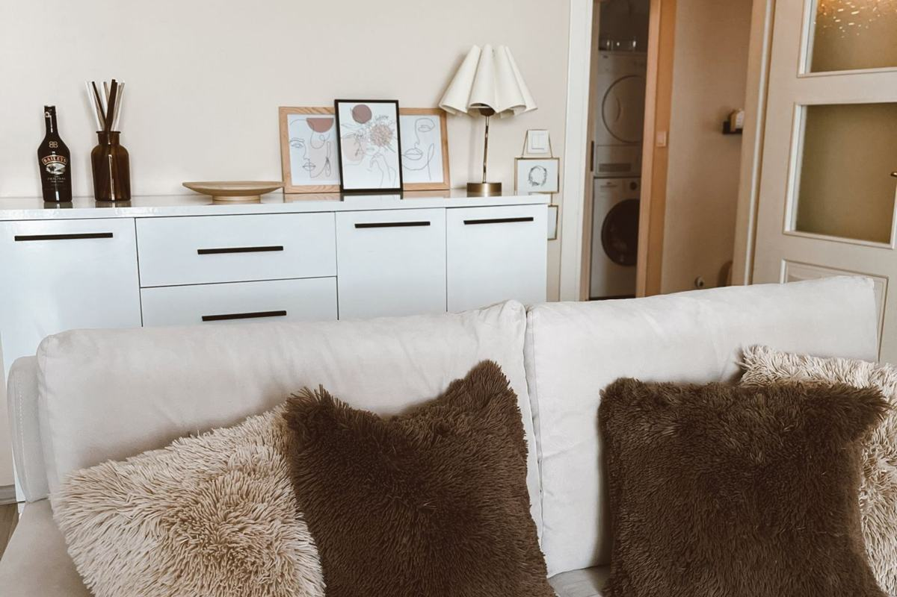

About Julia's Curated Finds

Hi, I'm Julia. I love a good find: the $13 glow drop that looks like the $49 one, the throw blanket that gives the designer look without the designer price.
Julia's Curated Finds is where I gather affordable dupes and genuinely useful products in beauty and home, and lay them side by side so you can decide quickly.
How picks are chosen
I'll be upfront: picks are researched, not personally tested, unless a post clearly says otherwise. Each comparison is built from published specs and ingredient lists, star ratings and review counts, recurring themes in buyer reviews, and independent editorial reviews. When I write "buyers say" or "top-rated," that's what it means: a summary of what many reviewers report, not my own experience.
What you won't find here
- Fake or invented reviews or testimonials.
- Medical claims. Products are described by how they look and feel, not what they "cure."
- Hidden ads. Affiliate links are disclosed on every post. See the disclosure.
Also check out my sister shop on Etsy, Julia's Curated Trends. Questions or suggestions for a dupe? Get in touch.